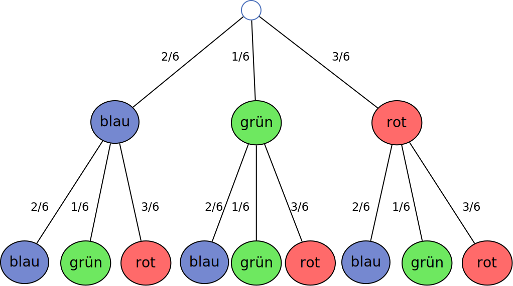

Was ist Wahrscheinlichkeitsrechnung?
Die Wahrscheinlichkeitsrechnung beschäftigt sich mit der Berechnung von Wahrscheinlichkeiten für verschiedene Ereignisse. Sie wird verwendet, um die Chance eines bestimmten Ergebnisses vorherzusagen.
P(Ereignis) = günstige Fälle / mögliche Fälle

Grundregeln der Wahrscheinlichkeit
- Die Wahrscheinlichkeit liegt immer zwischen 0 (unmöglich) und 1 (sicher).
- Die Summe aller möglichen Ereignisse ergibt 1.
- Je mehr günstige Fälle es gibt, desto höher ist die Wahrscheinlichkeit.
Beispiele
- Beispiel 1: Würfel
Wie hoch ist die Wahrscheinlichkeit, eine 6 zu würfeln?
Es gibt 6 mögliche Ergebnisse (1,2,3,4,5,6), aber nur eine 6.
P(6) = 1 / 6 ≈ 16,67% - Beispiel 2: Münzwurf
Wie hoch ist die Wahrscheinlichkeit, "Kopf" zu bekommen?
Es gibt zwei mögliche Ergebnisse (Kopf oder Zahl).
P(Kopf) = 1 / 2 = 50% - Beispiel 3: Mehrmaliges Würfeln
Die Wahrscheinlichkeit für ein bestimmtes Ereignis bei mehreren Würfen wird durch Multiplikation der Einzelwahrscheinlichkeiten berechnet.
Beispiel: Wie hoch ist die Wahrscheinlichkeit, zweimal hintereinander eine 6 zu würfeln?
Die Wahrscheinlichkeit für eine einzelne 6 beträgt 1/6.
Da die Würfe unabhängig voneinander sind, multiplizieren wir:
P(6, 6) = (1/6) * (1/6) = 1/36 ≈ 2,78%.
Merkregel für mehrmaliges Würfeln
Wenn ein Ereignis mehrfach hintereinander eintreten soll, multipliziert man die Wahrscheinlichkeiten der Einzelschritte miteinander.
P(Ereignis n-mal) = P(Ereignis)ⁿ